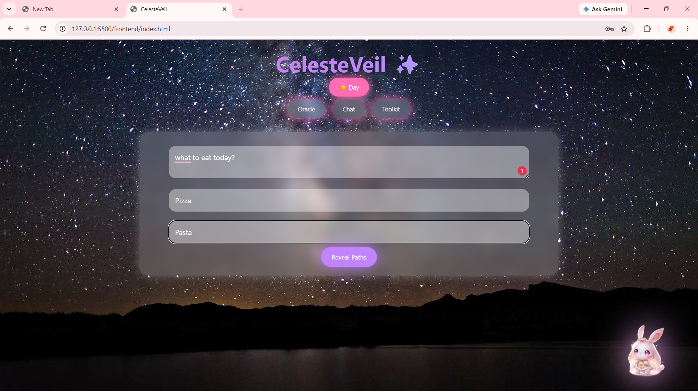
CelesteVeil is an AI-powered emotional wellness ecosystem designed to provide users with comfort, mindfulness, emotional support, decision guidance, and productivity assistance through an engaging kawaii-inspired experience. The platform combines artificial intelligence, wellness tools, personal reflection systems, and local language models into a single calming environment that promotes healthier digital habits and emotional wellbeing.
Luna serves as the intelligent AI companion of CelesteVeil, providing friendly conversations, emotional guidance, encouragement, and supportive responses through a calming chat interface.
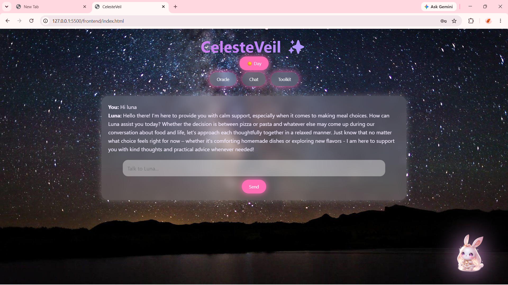
The Oracle module assists users in making thoughtful decisions by comparing multiple options and generating AI-guided insights that help users choose confidently.
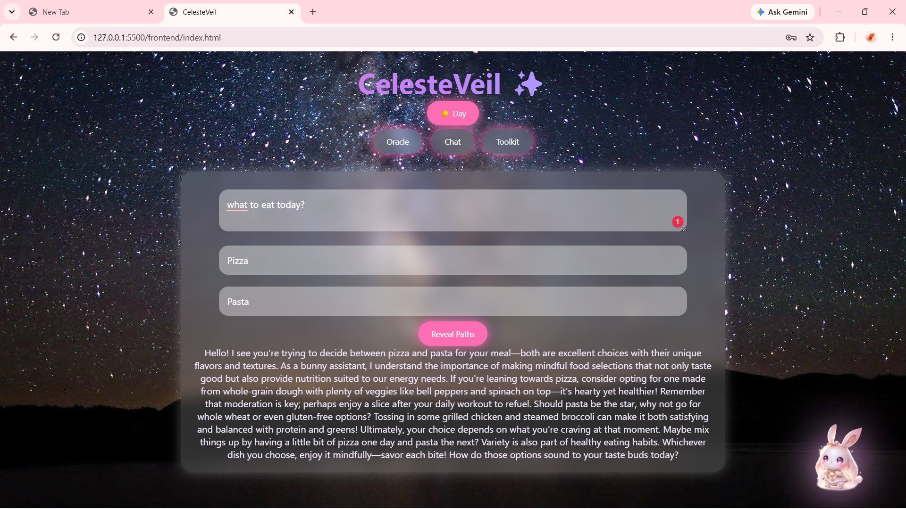
Users can record and monitor emotional states through an intuitive mood-tracking interface, allowing self-awareness and emotional reflection over time.
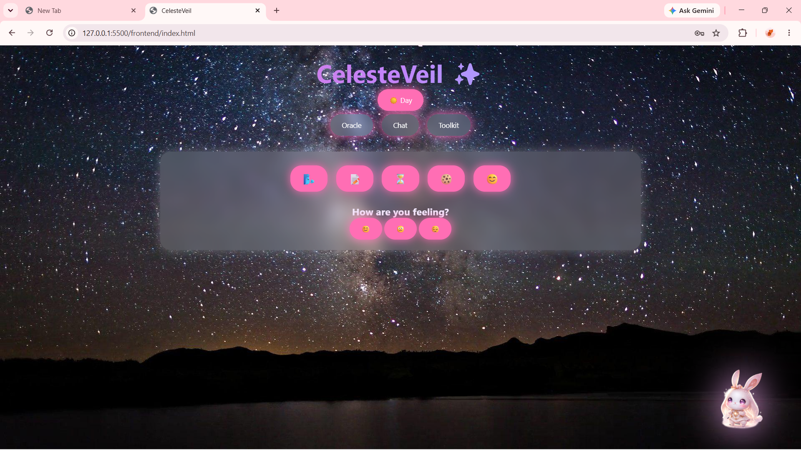
The journaling module enables users to store personal thoughts, daily reflections, and emotional experiences in a safe and comforting digital space.
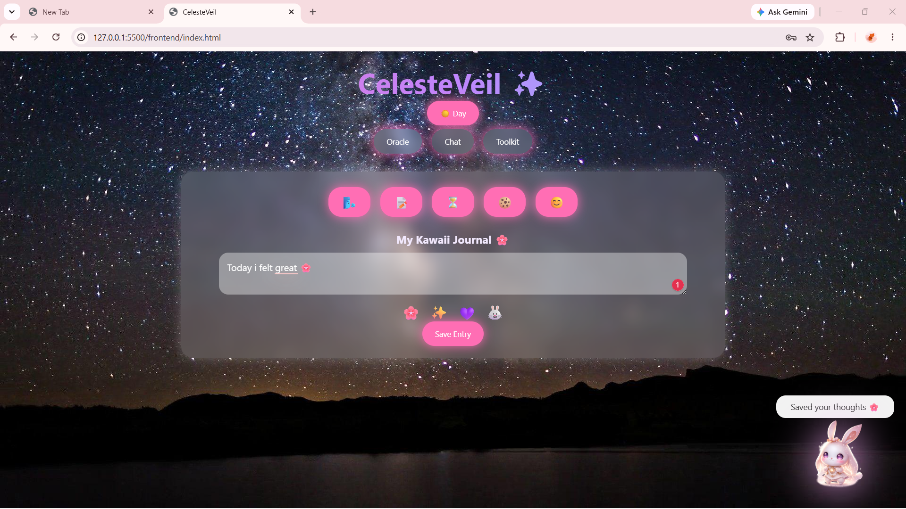
A productivity-focused Pomodoro-style timer helps users maintain concentration, build healthy study habits, and manage focused work sessions effectively.
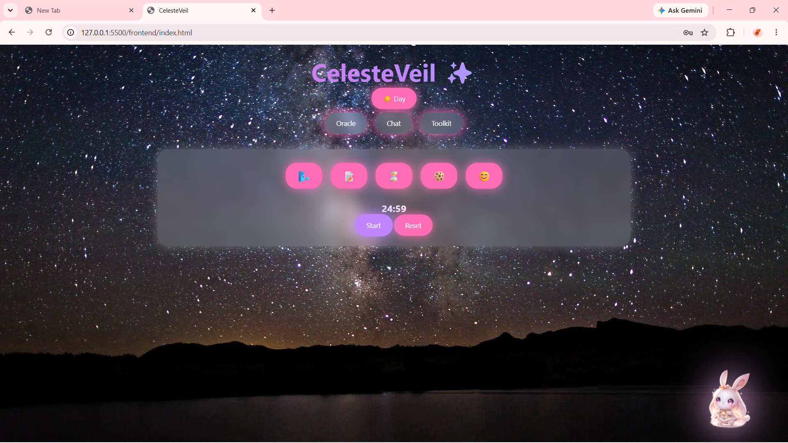
CelesteVeil includes a motivational fortune cookie generator that delivers positive affirmations, encouragement, and uplifting messages to brighten a user's day.
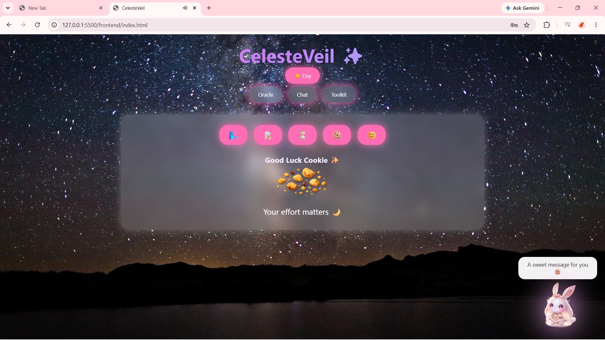
The wellness dashboard offers mindfulness exercises such as breathing activities and relaxation tools designed to reduce stress and improve emotional balance.
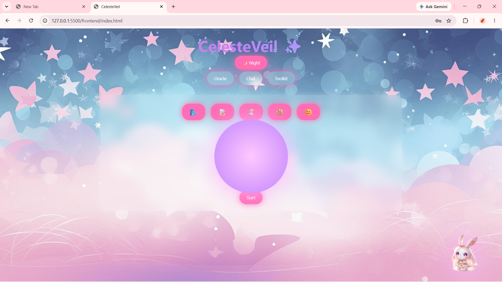
Secure login and user authentication features provide a personalized experience while protecting user preferences, journal entries, and wellness history.
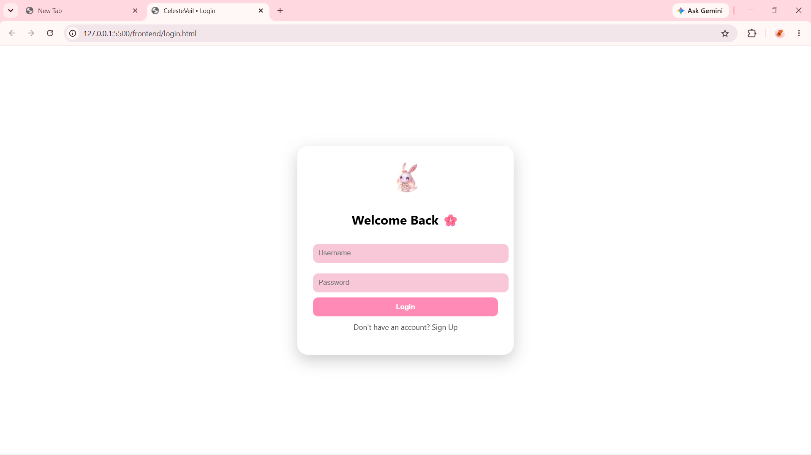
CelesteVeil integrates local Large Language Models through Ollama, enabling privacy-focused AI conversations using models such as Llama 3 and Gemma without relying entirely on cloud-based services.
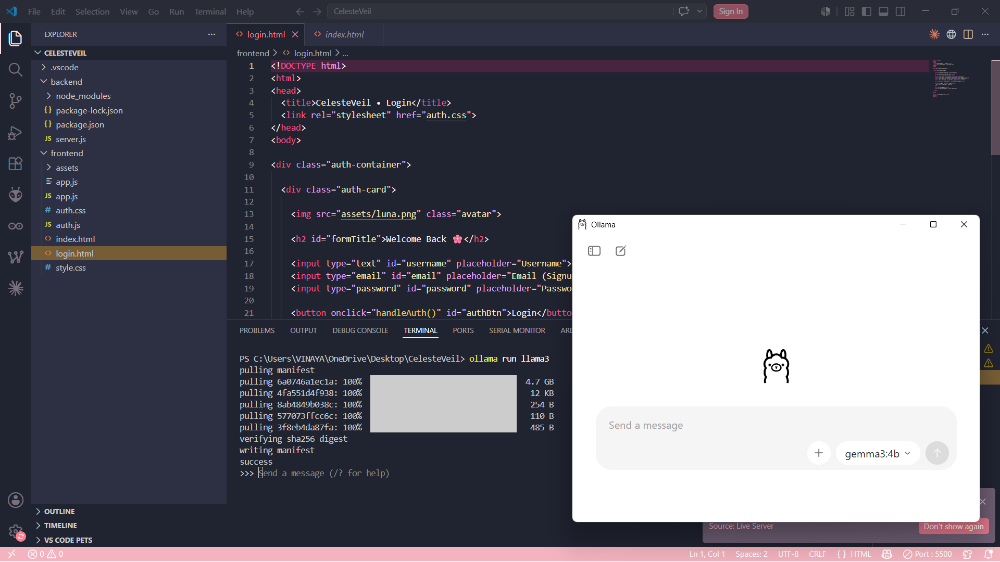
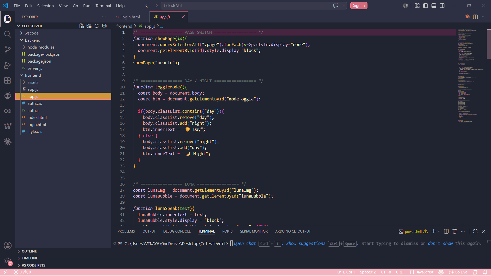